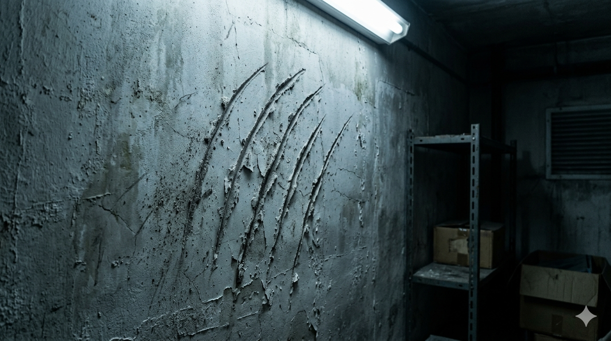

图片未找到
请将图片放入 ../media/hidden_claw_0314.jpg
请将图片放入 ../media/hidden_claw_0314.jpg
[点击图片查看细节] 或 [悬停放大观察]
文件名：
IMG_0314.jpg
拍摄地点：
13F 杂物间
拍摄时间：
03:14
文件大小：
2.3 MB
赵宇的临时备注
这不是普通划痕。
墙体里像是空的。
这个系统页面有个东西看起来很重要。但我不知道应该怎么激活它...也许有什么特殊的方法？
墙体里像是空的。
这个系统页面有个东西看起来很重要。但我不知道应该怎么激活它...也许有什么特殊的方法？